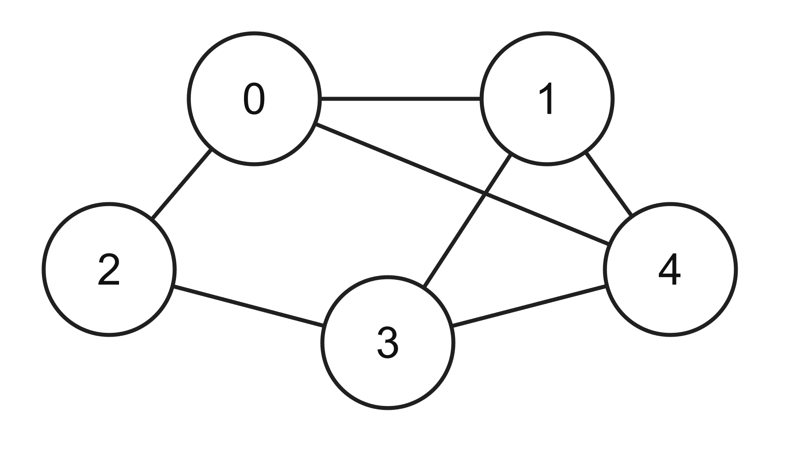

2015-42
图的基本概念图的存储及基本操作已知含有 5 个顶点的图 G 如下图所示。
请回答下列问题：
1）写出图G的邻接矩阵A（行、列下标从0开始）。
2）求A²，矩阵A²中位于0行3列元素值的含义是什么？
3）若已知具有n（n≥2）个顶点的图的邻接矩阵为B，则Bm（2≤m≤n）中非零元素的含义是什么？

（1）邻接矩阵 A 为：
（2）A2 为：
A2 中位于 0 行 3 列的元素值 3 表示从顶点 0 到顶点 3 之间长度为 2 的路径共有 3 条。
（3） Bm （ 2 ≤ m ≤ n ）中非零元素的含义是：从顶点 i 到顶点 j 长度为 m 的路径条数。
本题讲解：图的邻接矩阵与矩阵幂的含义
第 0 步：先立机制——矩阵乘法为什么在"数路径"
A[i][j] = 1 的含义是"从 i 走一步能到 j"。按矩阵乘法定义 A²[i][j] = Σk A[i][k]·A[k][j]，第 k 项等于 1 当且仅当"i 一步到 k"与"k 一步到 j"同时成立——把两个"一步"接起来，恰好构成一条"两步"的路径；对 k 求和，就是在枚举每一个可能的中间顶点。于是得到本题三问共用的钥匙：
邻接矩阵的 m 次幂中，[i][j] 元素 = 从 i 到 j、长度为 m 的路径条数。 先立住这条，A² 里每个数字都不再是乘法算出来的"死数"，而是有图论含义的"路径计数"。
问题（1）：写出邻接矩阵 A
图 G 有 5 个顶点 0~4、7 条边：0-1, 0-2, 0-4, 1-3, 1-4, 2-3, 3-4。无向图邻接矩阵的两个天然性质：对称（i 到 j 有边 ⇔ j 到 i 有边）、对角线全 0（简单图中自己到自己无边）。A[i][j]=1 当且仅当 i 与 j 有边（行列下标从 0 开始）：
| A | 0 | 1 | 2 | 3 | 4 |
|---|---|---|---|---|---|
| 0 | 0 | 1 | 1 | 0 | 1 |
| 1 | 1 | 0 | 0 | 1 | 1 |
| 2 | 1 | 0 | 0 | 1 | 0 |
| 3 | 0 | 1 | 1 | 0 | 1 |
| 4 | 1 | 1 | 0 | 1 | 0 |
问题（2）：求 A²，并说明 0 行 3 列元素的含义
先用机制直接算目标格——"从 0 到 3 长度为 2 的路径"就是枚举中间顶点 k：k 必须与 0 相邻（A[0][k]=1），又要与 3 相邻（A[k][3]=1）。0 的邻居是 1、2、4，其中与 3 相邻的恰好也是 1、2、4 → A²[0][3] = 1+1+1 = 3，对应三条路径 0→1→3、0→2→3、0→4→3。
其余格子按同一机制逐格计算（表格作第二层验证与汇总），得：
| A² | 0 | 1 | 2 | 3 | 4 |
|---|---|---|---|---|---|
| 0 | 3 | 1 | 0 | 3 | 1 |
| 1 | 1 | 3 | 2 | 1 | 2 |
| 2 | 0 | 2 | 2 | 0 | 2 |
| 3 | 3 | 1 | 0 | 3 | 1 |
| 4 | 1 | 2 | 2 | 1 | 3 |
含义：A² 中位于 0 行 3 列的元素值 3 表示——从顶点 0 到顶点 3 之间长度为 2 的路径共有 3 条。另有两个可自查的机制特征：A²[i][i] = 顶点 i 的度（每条相邻边都贡献一次"出去再折回"），如 A²[0][0]=3 恰是顶点 0 的度；对称图的 A² 仍对称，可用来快速校验。
问题（3）：Bm（2≤m≤n）中非零元素的含义
用归纳法把第 0 步的钥匙推广：B¹ 的元素就是"长度为 1 的路径"（即边）的条数；Bm = Bm−1×B，把每条"长度 m−1 的路径"再接上一条边、对所有衔接点求和，[i][j] 元素就累加成"从 i 到 j 长度为 m 的路径条数"。因此 Bm 中非零元素的含义是：从顶点 i 到顶点 j 存在长度为 m 的路径，元素值即这样的路径条数。
易错点
- 把"路径"当成简单路径：矩阵幂统计的是"边序列"意义下的路径，允许重复经过顶点/边（例如折返），考试按参考答案口径作答即可。
- A² 对角线算错：
A²[i][i]= 顶点 i 的度，源于"每条边折返一次"，可当校验器用。 - 下标错位：题目行列下标从 0 开始，"0 行 3 列"是矩阵的第 1 行第 4 个元素。
记忆锚点：邻接矩阵幂的 [i][j] 元素 = i 到 j 的对应长度路径条数；A²[0][3]=3 ⇔ 0→1→3、0→2→3、0→4→3；对角线 = 度。